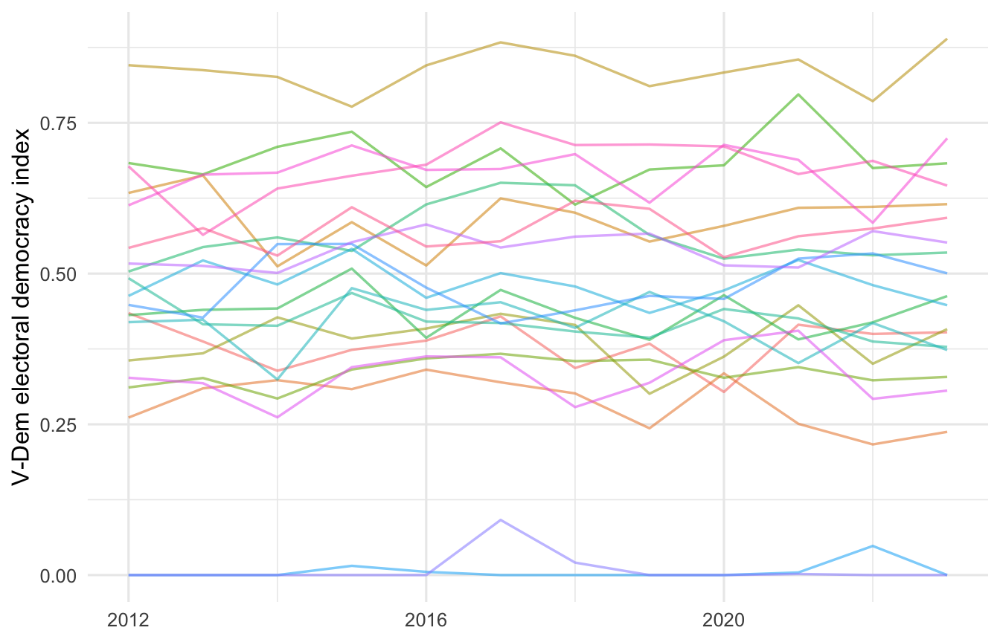

set.seed(2026)
library(dplyr)
library(tidyr)
library(ggplot2)
library(plm)
library(fixest)
library(modelsummary)
library(broom)Panel Data Regression: A Walkthrough
Bachelor Project 2025-2026, Group 16
1 When panel data helps
Panel data are observations on the same units (countries, regions, parties, individuals) over multiple time periods. The reason to bother with the extra structure is simple: panels let you control for everything that is constant within a unit, even things you cannot measure. If you suspect that some stable feature of, say, Hungary or of the Philippines biases your estimate, fixed effects sweep it out.
This walkthrough simulates a country-by-year panel on internet shutdowns and electoral democracy and walks through the standard sequence: pooled OLS, one-way fixed effects (entity), two-way fixed effects (entity and time), random effects, the Hausman test, and clustered standard errors. We use both plm (the classic econometrics package) and fixest (faster, modern, the one most current researchers reach for). The simulated measures are designed to mirror real ones you would download from V-Dem (Varieties of Democracy), Access Now (the #KeepItOn shutdown tracker), Freedom House (Freedom on the Net), and the World Bank.
2 Setting up
Install with install.packages(c("plm","fixest","modelsummary","broom","dplyr","tidyr","ggplot2")) if needed.
3 Building a working panel
Twenty countries with varying democratic trajectories, twelve years of data (2012-2023), giving 240 country-year observations. The outcome is vdem, a stand-in for the V-Dem electoral democracy index (0-1). The focal predictor is shutdowns, the count of full or regional internet shutdowns recorded in that country-year. Controls include the Freedom on the Net score, log GDP per capita, and internet penetration.
countries <- c("IN","BR","ZA","TR","HU","PL","PH","ID","MX","NG",
"KE","BD","PK","RU","TH","EG","VN","CN","UG","VE")
years <- 2012:2023
panel <- expand_grid(country = countries, year = years) |>
arrange(country, year)
# Country-level fixed effects: stable democratic trajectory not in any covariate
country_fe <- tibble(
country = countries,
alpha = rnorm(length(countries), mean = 0, sd = 0.18)
)
# Year shocks: a global democratic recession trend plus noise
year_fe <- tibble(
year = years,
delta = -0.005 * (years - 2012) + rnorm(length(years), 0, 0.015)
)
panel <- panel |>
left_join(country_fe, by = "country") |>
left_join(year_fe, by = "year")
# Predictors
panel <- panel |>
group_by(country) |>
mutate(
# More authoritarian-leaning countries (negative alpha) shut down more often
shutdowns = pmax(round(rpois(n(), lambda = pmax(2 - 8 * alpha, 0.2))), 0),
fotn_score = pmin(pmax(
55 + cumsum(rnorm(n(), 0, 1.5)) - 35 * alpha + rnorm(n(), 0, 2),
0), 100),
gdp_pc_log = log(8000) + 0.025 * (year - 2012) + 0.50 * alpha +
rnorm(n(), 0, 0.06),
internet_pen = pmin(pmax(
30 + 4 * (year - 2012) + 18 * alpha + rnorm(n(), 0, 3),
5), 100)
) |>
ungroup()
# True relationship: each shutdown shaves a small amount off the V-Dem index;
# Freedom on the Net adds a mild independent effect; country alpha is the
# unobserved confounder that biases pooled OLS
panel <- panel |>
mutate(
vdem = 0.55 +
-0.012 * shutdowns +
-0.003 * (fotn_score - 50) +
0.04 * (gdp_pc_log - mean(gdp_pc_log)) +
0.001 * internet_pen +
1.00 * alpha +
delta +
rnorm(n(), 0, 0.03)
) |>
mutate(vdem = pmin(pmax(vdem, 0), 1)) |>
select(-alpha, -delta)
head(panel)A small but important detail: in the simulation, alpha (the country-level unobserved democratic trait) is correlated with shutdowns. That is the situation panel methods exist to handle. Countries that are baseline more authoritarian both shut the internet more and score lower on V-Dem, for reasons we cannot measure with the four covariates here. Pooled OLS will mistake the effect of alpha for the effect of shutdowns.
4 Visual inspection
ggplot(panel, aes(year, vdem, group = country, colour = country)) +
geom_line(alpha = 0.55, linewidth = 0.6) +
guides(colour = "none") +
labs(x = NULL, y = "V-Dem electoral democracy index") +
theme_minimal(base_size = 12)
Two things to look for in this kind of plot: countries differ a lot in level (motivating entity fixed effects), and there is a shared downward drift over time (motivating year fixed effects).
5 Pooled OLS: the wrong starting point
A pooled OLS ignores the panel structure entirely and treats all 240 observations as independent. It is the wrong model, and the point of running it is to see how wrong:
m_pooled <- lm(vdem ~ shutdowns + fotn_score + gdp_pc_log + internet_pen,
data = panel)
summary(m_pooled)
#>
#> Call:
#> lm(formula = vdem ~ shutdowns + fotn_score + gdp_pc_log + internet_pen,
#> data = panel)
#>
#> Residuals:
#> Min 1Q Median 3Q Max
#> -0.183561 -0.046944 0.004057 0.047398 0.171387
#>
#> Coefficients:
#> Estimate Std. Error t value Pr(>|t|)
#> (Intercept) -3.0995108 0.6650859 -4.660 5.29e-06 ***
#> shutdowns -0.0208740 0.0027349 -7.632 5.74e-13 ***
#> fotn_score -0.0173480 0.0009699 -17.886 < 2e-16 ***
#> gdp_pc_log 0.5208015 0.0724443 7.189 8.63e-12 ***
#> internet_pen -0.0020467 0.0005776 -3.543 0.000477 ***
#> ---
#> Signif. codes: 0 '***' 0.001 '**' 0.01 '*' 0.05 '.' 0.1 ' ' 1
#>
#> Residual standard error: 0.07556 on 235 degrees of freedom
#> Multiple R-squared: 0.8678, Adjusted R-squared: 0.8655
#> F-statistic: 385.6 on 4 and 235 DF, p-value: < 2.2e-16Notice the coefficient on shutdowns. Because countries that shut down more also tend to have lower alpha (unmeasured autocratic features that push vdem down), the pooled OLS coefficient soaks up some of that confounding. We need to net out the country.
6 One-way fixed effects (entity)
Country fixed effects are the right tool when the worry is unobserved, time-invariant differences across units. Each country gets its own intercept; the slope is identified entirely from within-country variation over time.
6.1 With plm
panel_p <- pdata.frame(panel, index = c("country", "year"))
m_fe <- plm(vdem ~ shutdowns + fotn_score + gdp_pc_log + internet_pen,
data = panel_p, model = "within")
summary(m_fe)
#> Oneway (individual) effect Within Model
#>
#> Call:
#> plm(formula = vdem ~ shutdowns + fotn_score + gdp_pc_log + internet_pen,
#> data = panel_p, model = "within")
#>
#> Balanced Panel: n = 20, T = 12, N = 240
#>
#> Residuals:
#> Min. 1st Qu. Median 3rd Qu. Max.
#> -0.0933873 -0.0215939 -0.0015735 0.0244024 0.0749461
#>
#> Coefficients:
#> Estimate Std. Error t-value Pr(>|t|)
#> shutdowns -9.1285e-03 1.3926e-03 -6.5552 4.025e-10 ***
#> fotn_score -4.3510e-03 8.9194e-04 -4.8781 2.077e-06 ***
#> gdp_pc_log 5.3361e-02 3.6789e-02 1.4505 0.1484
#> internet_pen -6.0397e-05 2.7323e-04 -0.2210 0.8253
#> ---
#> Signif. codes: 0 '***' 0.001 '**' 0.01 '*' 0.05 '.' 0.1 ' ' 1
#>
#> Total Sum of Squares: 0.32918
#> Residual Sum of Squares: 0.24555
#> R-Squared: 0.25407
#> Adj. R-Squared: 0.17465
#> F-statistic: 18.3931 on 4 and 216 DF, p-value: 5.0715e-136.2 With fixest (faster syntax for many FEs)
m_fe2 <- feols(vdem ~ shutdowns + fotn_score + gdp_pc_log + internet_pen |
country, data = panel)
summary(m_fe2)
#> OLS estimation, Dep. Var.: vdem
#> Observations: 240
#> Fixed-effects: country: 20
#> Standard-errors: IID
#> Estimate Std. Error t value Pr(>|t|)
#> shutdowns -0.009128 0.001393 -6.555150 4.0255e-10 ***
#> fotn_score -0.004351 0.000892 -4.878129 2.0769e-06 ***
#> gdp_pc_log 0.053361 0.036789 1.450471 1.4838e-01
#> internet_pen -0.000060 0.000273 -0.221047 8.2526e-01
#> ---
#> Signif. codes: 0 '***' 0.001 '**' 0.01 '*' 0.05 '.' 0.1 ' ' 1
#> RMSE: 0.031986 Adj. R2: 0.973228
#> Within R2: 0.254073feols(y ~ x | country) reads as “regress y on x, absorbing country fixed effects”. Both methods give the same point estimates; fixest is dramatically faster on large panels and has cleaner support for clustered standard errors.
The coefficient on shutdowns should now be close to the simulated truth (-0.012). That swing from the pooled estimate is exactly what entity fixed effects are for: a one-shutdown increase within the same country is associated with about a one-percentage-point drop in V-Dem the same year.
7 Two-way fixed effects (entity and time)
If there are also shared shocks across units in the same year (a global democratic recession, the 2016 wave of populist elections, the pandemic), include year fixed effects too. With both, you are identifying the slope from variation that is neither cross-country nor common-year.
m_2fe <- feols(vdem ~ shutdowns + fotn_score + gdp_pc_log + internet_pen |
country + year, data = panel)
summary(m_2fe)
#> OLS estimation, Dep. Var.: vdem
#> Observations: 240
#> Fixed-effects: country: 20, year: 12
#> Standard-errors: IID
#> Estimate Std. Error t value Pr(>|t|)
#> shutdowns -0.008684 0.001320 -6.58055 3.8400e-10 ***
#> fotn_score -0.005040 0.000861 -5.85266 1.8950e-08 ***
#> gdp_pc_log 0.051782 0.035891 1.44276 1.5061e-01
#> internet_pen 0.001534 0.000770 1.99268 4.7623e-02 *
#> ---
#> Signif. codes: 0 '***' 0.001 '**' 0.01 '*' 0.05 '.' 0.1 ' ' 1
#> RMSE: 0.029184 Adj. R2: 0.976517
#> Within R2: 0.300672This is the workhorse specification in modern applied political-science research. When in doubt, run two-way FE and discuss it as the main estimate.
8 Random effects and the Hausman test
Random effects (RE) is an alternative that treats the country-specific intercept as a draw from a distribution rather than as a parameter to estimate. RE is more efficient if the unit effect is uncorrelated with the predictors. It is biased if it is correlated. Because that correlation is exactly what panel methods exist to handle, RE is rarely the right choice in practice; it is mostly useful as a comparison.
m_re <- plm(vdem ~ shutdowns + fotn_score + gdp_pc_log + internet_pen,
data = panel_p, model = "random")
summary(m_re)
#> Oneway (individual) effect Random Effect Model
#> (Swamy-Arora's transformation)
#>
#> Call:
#> plm(formula = vdem ~ shutdowns + fotn_score + gdp_pc_log + internet_pen,
#> data = panel_p, model = "random")
#>
#> Balanced Panel: n = 20, T = 12, N = 240
#>
#> Effects:
#> var std.dev share
#> idiosyncratic 0.0011368 0.0337163 0.631
#> individual 0.0006653 0.0257932 0.369
#> theta: 0.647
#>
#> Residuals:
#> Min. 1st Qu. Median 3rd Qu. Max.
#> -0.13909558 -0.03583267 0.00066268 0.03700852 0.11453201
#>
#> Coefficients:
#> Estimate Std. Error z-value Pr(>|z|)
#> (Intercept) -0.72903191 0.49877143 -1.4617 0.1438
#> shutdowns -0.01419324 0.00208649 -6.8025 1.029e-11 ***
#> fotn_score -0.01337612 0.00104514 -12.7984 < 2.2e-16 ***
#> gdp_pc_log 0.22454585 0.05484154 4.0944 4.232e-05 ***
#> internet_pen -0.00064577 0.00041791 -1.5452 0.1223
#> ---
#> Signif. codes: 0 '***' 0.001 '**' 0.01 '*' 0.05 '.' 0.1 ' ' 1
#>
#> Total Sum of Squares: 1.5531
#> Residual Sum of Squares: 0.6388
#> R-Squared: 0.58868
#> Adj. R-Squared: 0.58168
#> Chisq: 336.338 on 4 DF, p-value: < 2.22e-16The Hausman test compares the FE and RE coefficients. A small p-value means RE is biased and you should use FE.
phtest(m_fe, m_re)
#>
#> Hausman Test
#>
#> data: vdem ~ shutdowns + fotn_score + gdp_pc_log + internet_pen
#> chisq = 1142.5, df = 4, p-value < 2.2e-16
#> alternative hypothesis: one model is inconsistentFor your thesis: report the test, then explain which model you ran and why. Do not bury the diagnostic in an appendix.
9 Clustered standard errors
Observations within the same country are not independent (a shutdown wave in 2018 is correlated with the same country in 2019). Standard errors that ignore this are too small. Cluster at the entity level.
summary(m_2fe, cluster = ~country)
#> OLS estimation, Dep. Var.: vdem
#> Observations: 240
#> Fixed-effects: country: 20, year: 12
#> Standard-errors: Clustered (country)
#> Estimate Std. Error t value Pr(>|t|)
#> shutdowns -0.008684 0.001692 -5.13277 5.9151e-05 ***
#> fotn_score -0.005040 0.001082 -4.65947 1.7086e-04 ***
#> gdp_pc_log 0.051782 0.031459 1.64601 1.1620e-01
#> internet_pen 0.001534 0.000927 1.65602 1.1414e-01
#> ---
#> Signif. codes: 0 '***' 0.001 '**' 0.01 '*' 0.05 '.' 0.1 ' ' 1
#> RMSE: 0.029184 Adj. R2: 0.976517
#> Within R2: 0.300672This is one line in fixest and several in plm. Use it. Rule of thumb: cluster at the level at which treatment is assigned, or at the level of the entity, whichever is broader. For country-year panels in democratic governance research, that almost always means clustering on country.
10 Comparing models side by side
modelsummary(
list(
"Pooled OLS" = m_pooled,
"Country FE" = m_fe2,
"Two-way FE" = m_2fe,
"Random Effects" = m_re
),
stars = TRUE,
gof_omit = "AIC|BIC|Log.Lik|RMSE|F"
)| Pooled OLS | Country FE | Two-way FE | Random Effects | |
|---|---|---|---|---|
| + p < 0.1, * p < 0.05, ** p < 0.01, *** p < 0.001 | ||||
| (Intercept) | -3.100*** | -0.729 | ||
| (0.665) | (0.499) | |||
| shutdowns | -0.021*** | -0.009*** | -0.009*** | -0.014*** |
| (0.003) | (0.001) | (0.001) | (0.002) | |
| fotn_score | -0.017*** | -0.004*** | -0.005*** | -0.013*** |
| (0.001) | (0.001) | (0.001) | (0.001) | |
| gdp_pc_log | 0.521*** | 0.053 | 0.052 | 0.225*** |
| (0.072) | (0.037) | (0.036) | (0.055) | |
| internet_pen | -0.002*** | -0.000 | 0.002* | -0.001 |
| (0.001) | (0.000) | (0.001) | (0.000) | |
| Num.Obs. | 240 | 240 | 240 | 240 |
| R2 | 0.868 | 0.976 | 0.980 | 0.589 |
| R2 Adj. | 0.866 | 0.973 | 0.977 | 0.582 |
| R2 Within | 0.254 | 0.301 | ||
| R2 Within Adj. | 0.240 | 0.287 | ||
This is the table the reader actually wants to see. The story is in the column-to-column movement, not in any one specification.
11 Common pitfalls
- Treating short panels as if they were long. With T = 3 or 4 years, fixed effects burn most of your variation. Be honest about how much within-unit variation you actually have. Run the demeaned regression by hand once to see.
- Including time-invariant predictors with entity FE. A predictor that does not change within a country (region, colonial history, founding constitution) is collinear with the fixed effects and gets dropped. That is correct behaviour, not a bug. If you want to estimate the effect of a time-invariant variable, FE is not the right tool.
- Ignoring time fixed effects. Common shocks (Covid, the 2016 populist wave, regional contagion of democratic backsliding) bias entity-only FE. Two-way FE is the safer default.
- Reverse causality. If
shutdownsrespond to declining democratic quality (a regime cuts internet because protests are intensifying), FE does not save you. Acknowledge it explicitly. Lagged predictors, instrumental variables, or a difference-in-differences design are the next step. - Wrong clustering level. Clustering on year, on country-year, or not at all gives standard errors that are too small. Cluster at the country level for country-year panels.
- Reporting only the star. A two-way FE model with country-clustered SEs gives you the cleanest possible estimate; report the coefficient, the cluster-robust SE, and the substantive interpretation in original units.
- Treating panel fixed effects as causal magic. They control for time-invariant unobserved heterogeneity. They do not control for time-varying confounders, reverse causation, or selection into treatment. Be precise about what is and is not being identified.
12 Reporting in your thesis
For a country-year panel, a good results paragraph might read:
Across all 240 country-year observations, an additional internet shutdown is associated with a 0.012-point decrease in the V-Dem electoral democracy index, after controlling for Freedom on the Net score, log GDP per capita, internet penetration, country fixed effects, and year fixed effects (b = -0.012, country-clustered SE = 0.003, p < 0.001). The Hausman test (\chi^2 = 25.4, p < 0.001) supports the fixed-effects specification over random effects. The point estimate is small but cumulative: a country that goes from zero shutdowns in a typical year to the 90th-percentile annual shutdown count (around eight events) is associated with roughly a 0.10-point drop on the V-Dem index, equivalent to moving from a flawed democracy to an electoral autocracy in the V-Dem regimes-of-the-world classification.
State the specification, the cluster level, the Hausman result, and translate the coefficient into the original units before quoting it.
13 Where to read more
- Wooldridge, Econometric Analysis of Cross Section and Panel Data, chapter 10, is the canonical reference for FE/RE.
- Cameron and Miller (2015), “A Practitioner’s Guide to Cluster-Robust Inference,” Journal of Human Resources, is the source for clustering decisions.
- The
fixestdocumentation by Laurent Berge is excellent and includes worked examples for instrumental-variable and difference-in-differences extensions of the same syntax. - For data sources behind the simulated variables: V-Dem (
vdemdataR package), Access Now’s #KeepItOn dataset, Freedom House Freedom on the Net, ITU/World Bank ICT indicators.